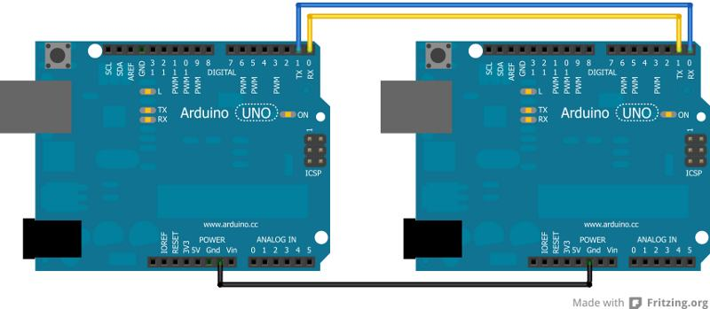

A Garra Makey
Recondicionamento e alteracao de uma maquina de garra, para funcionar com varios controles a partir do arduino
RECONDICIONAMENTO
- Iluminação: Substituição do balastro flourescente por leds
- Estrutura: Aligeirar a estrutura para facilitar o transporte e montagem mantendo o traço original
Hardware Nativo: Reverse engineering do circuito original de modo a encontrar o ic responsavel pelo temporizador de jogo e aumentar o tempo de controle.
Medidas Máquina BOX - 1870x810x625 mm ALTURA AO CHÃO - 100 mm perfil lateral - 40 mm perfil lateral - 20x20 mm
Hardware
- Emulação do controle original usando relés (Interfacing Hack)
- Utilização de CSEduino na maquina como Master que controla o movimento da garra
- Utilização de Arduino externo Slave que comunica o arduino Master, responsável pelo envio daas instruções de movimento
Software
Protocolo de Comunicação I2C com uma taxa de actualização de 30fps (33ms)
https://www.arduino.cc/en/Tutorial/MasterReader
Metodo de transferência de informação - Boleanas, Bytes & Mascaras
https://www.arduino.cc/en/Tutorial/BitMask
http://playground.arduino.cc/Code/BitMath
PLANO DE ATAQUE
Fase 1
- Programar Masterino
- Programar Controlino (Template)
- Construir Placa Relés
- Definir e implementar interface físico entre inos
- Testar e validar
- Criar biblioteca de comunicação
- Disponibilizar biblioteca e lançar desafio à comunidade
Fase 2
- Reduzir peso do equipamento
- Faze-lo transportável
- Redecorar
- Produzir toneladas de brindes
- Levar A Garra Makey à Maker Faire 2016!
WIP
// Caracteres de comunicação entre arduinos
//
// - I - Idle (liga led confirma serial on)
// - N - North
// - S - South
// - E - East
// - W - West
// - G - Grab
// - C - Coin
// - Default - OFF
// INSEWGCX > Default Byte > 10000000
// BYTE MASKS
//
// - I > 10000000
// - N > 01000000
// - S > 00100000
// - E > 00010000
// - W > 00001000
// - G > 00000100
// - C > 00000010
// - X > 00000001
// INSEWGCX INSEWGCX
// -N------ > 01000000
// -N-E---- > 01010000
// ---E---- > 00010000
// --SE---- > 00110000
// --S----- > 00100000
// --S-W--- > 00101000
// ----W--- > 00001000
// -N--W--- > 01001000
// -----G-- > 00000100
// ------C- > 00000010
// Masterino busca um byte ao Controlino via i2c
// Controlino avalia inputs do utilizador e transforma-os numa tabela de verdades - o byte
// Controlino fica à escuta do evento e envia a pedido o byte que estiver na memória no momento da consulta
// Masterino Testa o Byte e activa os pinos, definidos como constantes de acordo com a verdade (0/1) do bit respectivo
PopUpIdeas
Bring your own controller - disponibilizar no website o protocolo e a ficha e lançar o desafio make your onw controller and agarra makey
ALTERNATIVAS:
LIGAR ARDUINO - ARDUINO - Via Serial

http://robotic-controls.com/learn/arduino/arduino-arduino-serial-communication
MASTER CODE Example
//Listener code
char value;
void setup() {
Serial.begin(9600);
}
void loop() {
if (Serial.available()) {
delay(100); //allows all serial sent to be received together
value = Serial.read();
}
switch (value){
case 'I':
do_idle_function() // função a definir que liga led para confirmar que está a receber serial
break;
default
do_nothing_function()
break;
}
}
CONTROLLER CODE Example
//Sender code
char value;
void setup() {
Serial.begin(9600);
}
void loop() {
value='N'; //Valor a activar no Master
Serial.write(value);
}